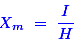
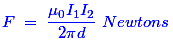
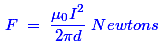
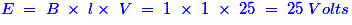
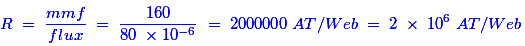
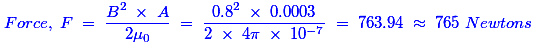

- The stray line of magnetic flux is defined as
The stray magnetic field can cause an unwanted magnetic field between the magnetic source and the area where they do not want any stray magnetic field. The unwanted magnetic fields are usually does not follow the designed path.
- A rectangular magnet of magnetic moment M is cut into two places of same length. The magnetic moment of each place will be
As shown in the above figure, if we cut the magnet into two places of same length, then the magnetic moment M also would divide into two equal values. Hence, the new magnetic moment of each place is M / 2. - The permanent magnets are made from which of following materials ?
The ferromagnetic materials have high retentivity and lower coercivity. It helps to a permanent magnet that retains its magnetic properties for a long time even if we remove the applied magnetic field and magnetic materials from which permanent magnets are made, basically called as hard magnetic materials. Hence, the ferromagnetic materials are used to make permanent magnets.
- Which of following is a vector quantity?
Magnetic field intensity is a force. The vector notation should be required to indicate the magnitude of intensity and the direction of force which is developed by that intensity. Hence, the magnetic field intensity is a vector quantity from the above all systems.
- The magnetism left in the iron after exciting field has been removed is known as
Whenever we apply the exciting field continuously to one coil, there is a chance to have some magnetic power left in that coil and that retains its magnetic properties for a particular time even if we remove the applied exciting field which is called residual magnetism.
- The tubes of force within the magnetic material are known as
If we keep one magnetic material near by a magnetic flux which is produced by a separate excitation source, then the magnetic lines of force is induced in it. The group of limited number of magnetic lines of force forming a tube like structure is referred as tubes of force by Faraday. Hence, the tubes of force within the magnetic material are known as magnetic flux.
- The ratio of intensity of magnetisation to the magnetising force is known as
The magnetic susceptibility indicates how easily the material can be magnetized. It is expressed by the following equation.
 Hence, it is the ratio of magnetization (I) induced in the material to magnetizing force (H). Therefore Xm is a number and has no units. - The two conductors of a transmission line carry equal electric current I in opposite directions. The force on each conductor is
We know that the force is basically given by the following expression.

If the two conductor currents I1 and I2 are equal and if they are in opposite direction, then the force developed by the conductors can be written as,

Hence, according to the above expression of force, the force is directly proportional to the square of the currents and the force is repulsive in nature. - The magnetic vector potential due to a single conductor carrying electric current is
In a single conductor, the direction of the electric current is passed the same way or same direction of magnetic vector potential. Then that can be treated as a electric current distribution on the surface of an infinite wire length. Hence, the magnetic vector potential is also infinite due to the single conductor carrying current.
- The Biot-savart's law is a general modification of
Because, Biot-Savart’s law describes the three different types of currents, which is nothing but the filament or line current, surface electric current and volume current. Hence, this law is a general modification of Ampere’s law.
- How does the magnetic compass needle behave in a magnetic field?
The magnetic field acts upon the magnetic material of the compass needle that causes the needle to align with respect to the field.
- A conductor of length 1 metre moves at right angles to a magnetic field of flux density 1 Wb / m2 with a velocity of 25 m / s. The induced emf in the conductor will be
Given data: Length ‘l’ = 1 meter; Flux density ‘B’ = 1 Wb/m2; Velocity ‘V’ = 25 m/s.
Then, the induced in the conductor is given by the following expression.
 - Which of following is the unit of magnetic flux density?
Nikola Tesla was best known for his contributions to the design of the modern alternating electric current electricity supply system and his name has been honored with an international unit of magnetic flux density.
- A magnetic material has a total flux B of 80 micro Wb with an mmf of 160 AT. The reluctance in ampere turn per weber is
Given data: Total flux ‘Φ’ = 80 micro Weber; mmf = 160 AT; Reluctance = ?
The reluctance can be calculated by the given formula.
 - The force required to seperate two surfaces with a contact area measuring 5 cm by 6 cm, when flux density normal to the surface is 0.8 tesla, will be
Given data: Area ‘A’ = (5 × 6 × 10-4) = 0.003; Flux density ‘B’ = 0.8 Tesla; Force = ?
The force can be calculated by using the below expression.
 - The lagging of flux density behind the applied magnetising force is known as
The lag or delay of a magnetic flux density known commonly as magnetic Hysteresis. This relates to the magnetization properties of a material by which it firstly becomes magnetized and then de-magnetized.
- Which part of magnetic path requires largest mmf?
The air gap is basically to make the magnetization characteristics of the circuit more linear. It ensures a linear relationship between voltage and current. Hence, the air gap allows more flux to flow in it. That is why it requires largest mmf.
- The attraction capacity of electromagnet will increase if the
The amount of flux production is the only one property to decide the attraction capacity of electromagnet. So, if the flux density increases, then the attraction capacity of an electromagnet will also increase.
- Which of following is not a unit of flux?
A Weber (Wb) is a derived SI unit of magnetic flux. Maxwell is CGS unit of magnetic flux. Tesla is a SI unit of magnetic flux density or magnetic field strength.
- Indicate which of following material does not retain magnetism permanently
This ability of a material to retain its magnetism is called Retentivity. Materials which are required to retain their magnetism will have a fairly high retentivity. But, soft iron has no retentivity. Hence, it does not retain magnetism permanently.
Design with  by SARU TECH
by SARU TECH
www.sarutech.com
Content Credited to electrical4u.com
Online Electrical Engineering Study Site